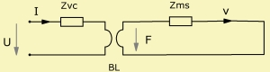
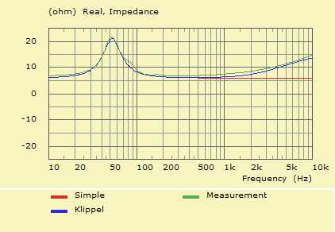
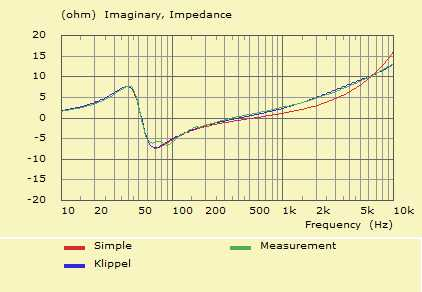
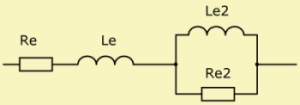

Electro Dynamic Driver, Voice Coil Model, Mechanics of Driver, Lumped Element Diaphragms, Electro Dynamic Standard Model
 |
|
Zvc is the voice-coil impedance in the model of the electro-dynamic transducer. At low frequencies Zvc it is comprised of the voice coil resistance Re and an inductance Le.
 |
 |
The above plot displays the real and imaginary parts of the electric driving point impedance of an electro-dynamic transducer. The green curve is measured and the red and blue are model-curves.
Obviously the blue curve provides a better fit than the red curve, which is the above simple Re, Le model.
Advanced voice coil models simulate the effect of eddy currents and other induction effects. ABEC supports a range of voice coil models. The selection is simply by specifying the relevant parameters of each model.
The Klippel analyser is based on a transducer-model, which facilitates taking into account non-linear effects. In this context it is easiest to use a network of lumped elements in order to capture the unusual frequency response curves of the blocked voice-coil impedance at high frequencies. Despite its simplicity the Klippel model usually fits quite good at low and mid frequencies.

The Klippel model consists of two blocks. The first is a series connection of the resistance, Re and an inductance, Le. The second is formed by the parallel connection of the resistance Re2 and the inductance, Le2. Values for the components are best produced by the Klippel driver measurement system. It is also possible to use the driver identification tool of VACS.
For example
Def_Driver 'M1'
Re=6hm Le=0.148mH Re2=9.258ohm Le2=0.31mH
Mms=5.77g Cms=1.576e-3m/N Rms=1.141Ns/m Bl=4.13N/A
The Akabak model is a black box model, which makes use of exponential functions for the resistance and reactance. Usually this model yields satisfactory results up to high frequencies. It is also possible to combine the Akabak and the Klippel model. Values of the Akabak model can be retrieved with the help of the driver-parameter identification tool of VACS or Akabak.
Re is the direct-current resistance of the voice-coil and should be measured with a direct-current-meter. Eddy currents inside the pole-piece and other effects cause a rise of Re at high frequencies. The controlling parameters are the frequency fre= and the exponent ExpoRe=:
Re(f) = Re·(1 + f/fre)ExpoRe
Typically fre = 2kHz .. .20kHz and ExpoRe > 1. The value of fre is much larger then the fundamental resonance of the driver: fre >> fs. If you intend to perform only low frequency analysis you may neglect these parameters.
Typically, the voice-coil reactance Xe has a shallower graph at high frequencies than Xe = ω·Le would predict. The Akabak-approximation is:
Xe = (ω·Le)r
with
r = (1 + qExpoLe)/(1 + q)
q = (ω·Le/Re)2
This formula has been determined empirically. The parameter ExpoLe can be in the range of ExpoLe = 0 ... 3. In most cases a good fit is obtained with ExpoLe = 0.5 ... 0.7. Please note, that although Le is given in Henry, Le is just a constant with no relation to a real inductivity-parameter unless ExpoLe = 1 in which case Xe = ω·Le.
For example
Def_Driver 'M1'
Re=6ohm Le=0.545mH
fre=9.106kHz ExpoRe=1.258 ExpoLe=0.734
Mms=5.77g Cms=1.576e-3m/N Rms=1.141Ns/m Bl=4.13N/A